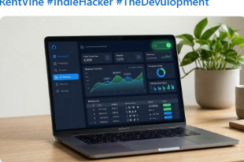
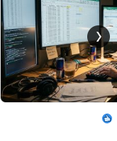

B2B FinTech · Operational Automation · Enterprise Accounting Systems
LedgerMate
Eliminating the 5-Hour Daily Bookkeeping Grind for US Property Management
Executive Summary
In US property management, accounting teams lose thousands of billable hours every month to a mind-numbing bottleneck: manually copying contractor invoices, utility bills, and repair expenses from tracking spreadsheets into General Ledger accounting platforms (QuickBooks Online) and operational property ERPs (RentVine, Buildium).
While working 40 hours/week as a junior accountant at a firm managing residential and commercial US property portfolios, I experienced this daily friction firsthand. Rather than accepting 4–5 hours of daily copy-pasting as inevitable, I designed and engineered LedgerMate: a modular, multi-ERP automation platform and AI-powered document ingestion pipeline.
The Core Breakthroughs:
- Dual-ERP Sync: Google Sheets → QuickBooks Online + RentVine/Buildium in a single atomic pass with direct PDF evidence linking.
- Multimodal Handwritten OCR: AI vision pipeline parsing messy handwritten contractor/handyman receipts directly into structured accounting records.
- Tenant Move-Out Pack: 1-click automated assembly of move-out invoices, deposit deduction calculations, and utility prorations.
- Results: Compressed a 5-hour daily manual transcription grind into a 5-minute automated batch execution (98% operational time reduction, self-measured on the daily bill-entry batch) with every entry traceable to its source PDF.
1. The Origin: Learning the workflow from the inside
Most FinTech designers design interfaces from secondary research or aesthetic Dribbble shots without ever touching a General Ledger or reconciling a bank feed.
With a 10+2 commerce foundation, I joined an accounting firm managing back-office books for US property portfolios. My daily reality was pure manual transcription for 40 hours a week: copying rows from Google Sheets, creating Bills in QuickBooks Online, assigning Chart of Accounts GL codes, posting duplicate charges into Buildium/RentVine, and hunting down PDF receipts across fragmented folders.
The Friction Multiplier: A single misclassified GL code created tax headaches for property owners. Misplaced PDF receipts caused audit panic. And 4–5 hours of every single workday were lost to mechanical typing.

LedgerMate Operational Dashboard
Workstation: Spreadsheets vs VS Code2. The Turning Point: "Design with and for AI"
While studying User Experience Design at Graphic Era University, I took Design with and for AI taught by Associate Professor Samarth Reddy. The core realization: Design is not just visual styling—it is system architecture. A designer who understands information models can use modern AI code synthesis to engineer working software.
Armed with deep domain knowledge of property bookkeeping and powered by VS Code and GitHub Copilot, I began engineering LedgerMate to solve my own daily professional agony.
3. Core Engineering & The Three Automation Pipelines
1. Bi-Directional Multi-ERP Sync & Direct Evidence Linking
Reads unbilled rows from Google Sheets, validates schemas, creates bills in QuickBooks Online (corporate GL), posts unit charges in Buildium/RentVine, embeds PDF proofs directly via binary API endpoints (no Google Drive links), and writes back the generated transaction IDs with a 'Done' flag.
2. Multimodal Vision OCR for Handwritten Contractor Invoices
Local plumbers, lawn care teams, and handymen frequently submit handwritten carbon paper receipts with scribbled line items. LedgerMate integrates a multimodal vision extraction pipeline that parses handwritten notes, separates labor from parts, extracts totals, and stages structured JSON directly into Buildium.
3. Automated Tenant Move-Out (MO) Document Assembly
When a tenant vacates, property managers face strict statutory deadlines to return security deposits. LedgerMate synthesizes move-out inspection checklists, outstanding utility ledgers, and repair deductions to compile a standardized, audit-ready Move-Out Statement and reconciliation letter in under 30 seconds.
4. Reliability & Security
Atomic Batching & Exception Queues: If 1 bill out of 75 fails (e.g. an unmapped vendor name or missing unit number), LedgerMate isolates the exception into an interactive review queue while successfully processing the other 74 rows without crashing the batch.
Idempotency Safeguards: Unique composite hashing (Vendor + Invoice# + Property ID + Amount) mathematically prevents duplicate bills even if a user triggers sync multiple times.
Licensing & Remote Kill-Switch: Built a client portal with usage metrics, token encryption, and an administrative license switch ensuring proprietary business logic remains secure.
5. Quantifiable Business Impact & ROI
I hadn't joined the firm just to do data entry; I joined to dissect the mechanical reality of financial systems from the inside. Once I built the system, I understood the leverage of software automation.
6. Where it goes next
The connectors are modular, so each integration can be adapted to other property-management workflows. A licensing layer (usage metrics, token encryption, an admin license switch) supports a SaaS model.
7. Decisions & trade-offs
Off-the-shelf iPaaS platforms are brittle for dual-ERP property accounting. Zapier charges steep fees at high transaction volume, lacks atomic batch rollback, and cannot handle complex hierarchical mappings (matching a contractor invoice to a specific property and unit in Buildium while simultaneously debiting the correct GL Chart of Accounts in QuickBooks Online). Furthermore, Zapier cannot handle multimodal handwritten invoice parsing or automated Move-Out PDF document compilation out of the box.
LedgerMate enforces a strict two-phase commit pattern. The payload is validated, posted to QuickBooks Online to capture the generated TxnId, and only upon an HTTP 200/201 response is the unit charge posted to Buildium/RentVine, cross-referencing both IDs before marking the spreadsheet row as Done. If any endpoint fails, the transaction is flagged in the exception queue for manual resolution rather than corrupting the ledger.
Domain knowledge let me specify the exact system logic (debits, credits, vendor terms, property operations) and review AI-generated code against it. AI coding tools did the typing; the information architecture and the checks were mine.